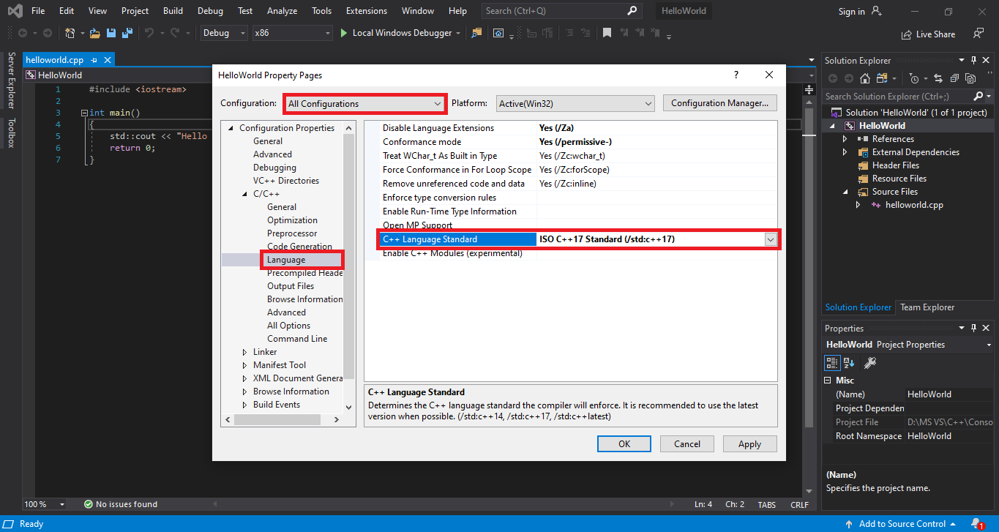

Hiện tại có rất nhiều phiên bản C++ (C++98, C++03, C++11, C++14, C++17,...), vậy làm thế nào compiler biết phải dùng phiên bản nào? Thông thường, compiler sẽ chọn mặc định một phiên bản (lưu ý không nhất thiết là phiên bản mới nhất). Nếu bạn muốn dùng phiên bản khác thì phải cài đặt lại setting của compiler. Những phiên bản khác nhau của C++ được gọi là language standard và con số theo sau C++ là năm language standard đó ra đời. Những phiên bản sau luôn có những tính năng mới mà các phiên bản trước không có do đó bạn nên chọn phiên bản mới nhất.
Chọn Language Standard
Để đổi Language Standard, các bạn vào phần Language giống bài học trước. Phần C++ Language Standard nó để Default, mặc định của Visual Studio 2019 là C++14 nên bạn chọn lại thành C++17 nhé. Nó còn có cái mục ở dưới C++17 nữa là lastest. Đó là phiên bản có các tính năng của C++20, tuy nhiên không nên chọn nó vì đó mới chỉ là phiên bản beta, có thể sẽ có bug.
Cuối cùng, các bạn chọn Apply rồi OK là xong.
Đến đây, mình đã hướng dẫn cho bạn cách thiết lập lại compiler để giúp việc học lập trình C++ tốt hơn. Mình xin nhắc lại là các setting đã học chỉ có tác dụng với project bạn đang làm việc, nếu tạo project mới thì phải thiết lập lại.
Ô kay, vậy là các bạn đã học xong chương đầu, mặc dù chưa học được gì nhiều về code nhưng chương này cũng khá quan trọng đấy. Từ chương sau trở đi chúng ta sẽ bắt đầu học cách viết code.